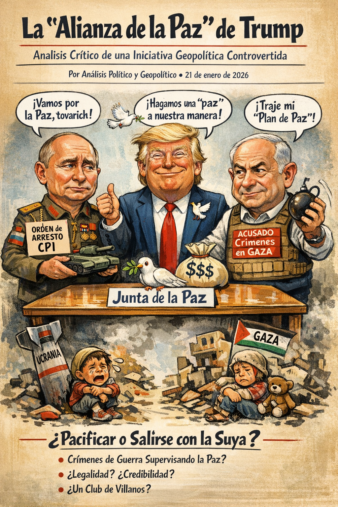
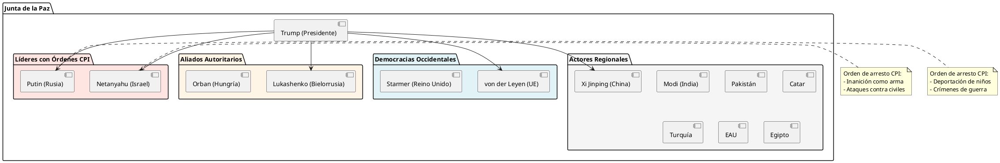
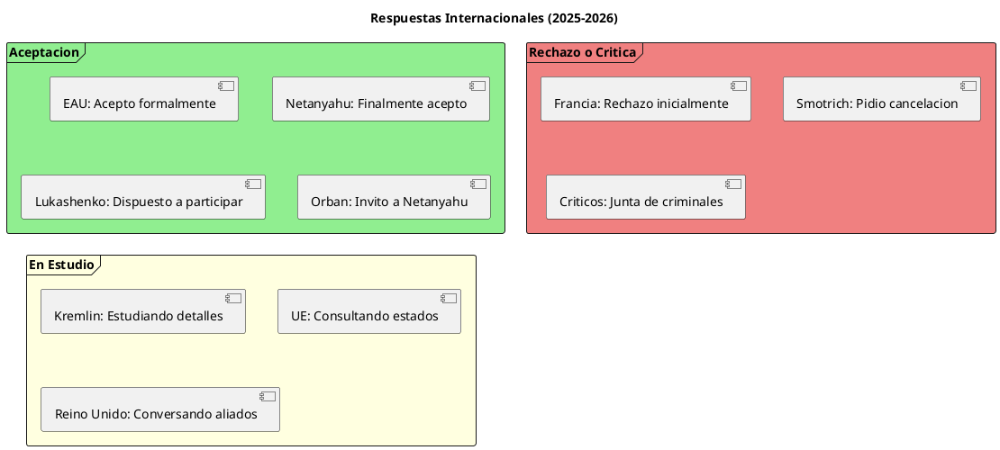
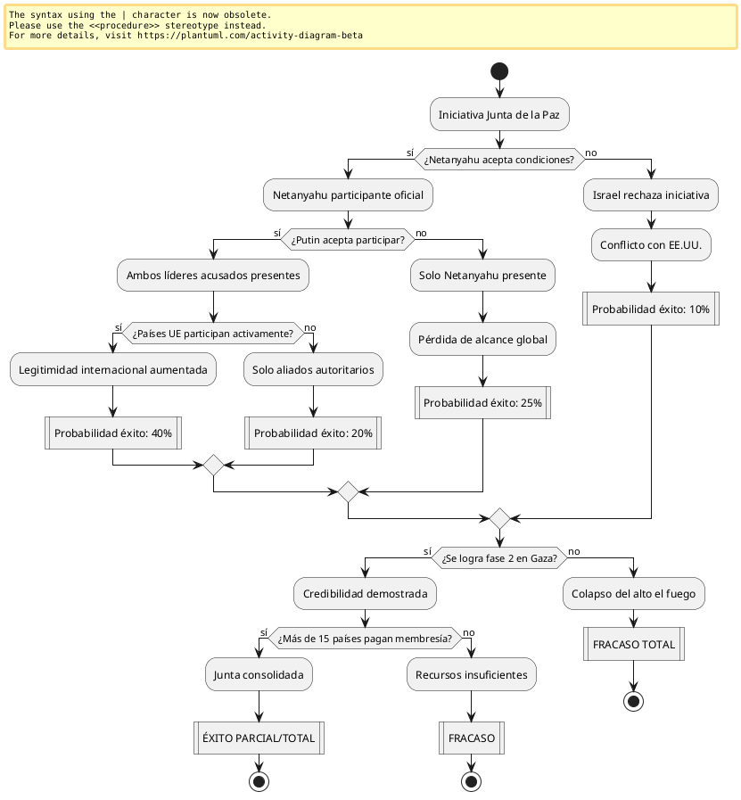

La "Alianza de la Paz" de Trump: Análisis Crítico de una Iniciativa Geopolítica Controvertida
La "Alianza de la Paz" de Trump: Análisis Crítico de una Iniciativa Geopolítica Controvertida

Resumen Ejecutivo
El Presidente Donald Trump ha presentado la denominada "Junta de la Paz" (Board of Peace), una iniciativa que inicialmente se planteó para supervisar la implementación del alto el fuego en Gaza, pero que ha evolucionado hacia un ambicioso proyecto de organización internacional alternativa. Lo más controvertido de esta propuesta reside en la participación de líderes con órdenes de arresto vigentes de la Corte Penal Internacional (CPI): Benjamin Netanyahu (Israel) y Vladimir Putin (Rusia), ambos acusados de crímenes de guerra.
Contexto Histórico y Geopolítico
Antecedentes del Conflicto de Gaza
El conflicto de Gaza se intensificó tras los ataques del 7 de octubre de 2023 perpetrados por Hamas, que desencadenaron una respuesta militar israelí de gran escala. El plan de paz presentado por Trump el 29 de septiembre de 2025 estableció un alto el fuego que entró en vigor el 10 de octubre de 2025, con el respaldo posterior del Consejo de Seguridad de la ONU el 17 de noviembre.
Las Órdenes de Arresto de la CPI
Contra Benjamin Netanyahu y Yoav Gallant
El 21 de noviembre de 2024, la CPI emitió órdenes de arresto contra Netanyahu y su entonces ministro de Defensa Yoav Gallant por:
- Crimen de guerra de inanición como método de guerra
- Crímenes de lesa humanidad: asesinato, persecución y otros actos inhumanos
- Dirigir intencionalmente ataques contra población civil
La Cámara Preliminar determinó que existían "motivos razonables" para creer que ambos líderes privaron intencionalmente a la población civil de Gaza de objetos indispensables para su supervivencia.
Contra Vladimir Putin
El 17 de marzo de 2023, la CPI emitió orden de arresto contra Putin por:
- Deportación y transferencia ilegal de niños ucranianos
- Crímenes de guerra en el contexto de la invasión de Ucrania
Putin se convirtió en el primer líder de un miembro permanente del Consejo de Seguridad de la ONU con orden de arresto de la CPI.
Estructura de la "Junta de la Paz"
Composición del Comité Ejecutivo
El comité ejecutivo fundador incluye:
- Marco Rubio (Secretario de Estado de EE.UU.)
- Steve Witkoff (enviado de Trump para Medio Oriente)
- Jared Kushner (yerno de Trump)
- Tony Blair (ex Primer Ministro del Reino Unido)
- Marc Rowan (CEO de Apollo Global Management)
- Ajay Banga (Presidente del Banco Mundial)
- Robert Gabriel (asesor adjunto de seguridad nacional)
Países Invitados
La lista de invitaciones supera las dos docenas de naciones, incluyendo:

Mecanismo de Financiación
La propuesta establece que las naciones deben pagar 1.000 millones de dólares para mantener membresía permanente después de tres años, lo que ha generado críticas sobre la mercantilización de la diplomacia internacional.
Análisis Crítico: Contradicciones Fundamentales
La Paradoja de los "Pacificadores Acusados"
┌─────────────────────────────────────────────────────┐ │ CONTRADICCIÓN MORAL FUNDAMENTAL │ ├─────────────────────────────────────────────────────┤ │ │ │ Líderes acusados de crímenes de guerra │ │ supervisando la paz │ │ │ │ Netanyahu: 46.000+ palestinos muertos en Gaza │ │ Putin: 350.000+ víctimas en Ucrania │ │ │ │ ¿Legitimidad? ¿Credibilidad? ¿Coherencia? │ │ │ └─────────────────────────────────────────────────────┘
Reacciones Internacionales Divergentes
Oposición dentro de Israel
El Ministro de Finanzas Bezalel Smotrich calificó la Junta como un "mal negocio para Israel" y pidió su disolución. Netanyahu inicialmente criticó la composición del comité ejecutivo por incluir a Turquía y Catar, rivales regionales.
Hipocresía Occidental Documentada
El contraste en las reacciones de gobiernos occidentales revela dobles estándares:
- Orden contra Putin (2023): celebrada por Biden, Blinken, Lindsey Graham
- Orden contra Netanyahu (2024): denunciada como "indignante" por Biden, "kangaroo court" por Graham
Francia argumentó que Netanyahu tiene inmunidad por no ser Israel miembro de la CPI, mientras que celebró la orden contra Putin (Rusia tampoco es miembro).
Respuestas de Países Invitados

Análisis de Viabilidad y Probabilidades
Tabla Comparativa: Obstáculos vs Facilitadores
| Factor | Obstáculos (-) | Facilitadores (+) | Balance |
|---|---|---|---|
| Legitimidad Legal | Órdenes CPI activas (125 estados obligados a arrestar) | EE.UU. no es miembro de la CPI | Negativo |
| Credibilidad Moral | Acusados de crímenes graves liderando iniciativa de paz | Poder político y económico de participantes | Muy negativo |
| Apoyo Internacional | Rechazo de ONG de DDHH, divisiones en UE | Apoyo de regímenes autoritarios y algunos aliados | Negativo |
| Pragmatismo Geopolítico | Contradice orden internacional establecido | Poder de EE.UU. para imponer su visión | Neutro |
| Financiamiento | Costo de $1.000 millones puede disuadir participación | Reconstrucción de Gaza requiere $53.000 millones (BM) | Negativo |
| Conflictos Internos | Turquía y Catar en comité molestan a Israel | Intereses compartidos en estabilidad regional | Negativo |
| Precedente Histórico | Ninguna iniciativa similar ha prosperado | Trump ya logró alto el fuego inicial | Neutro |
Escenarios Probabilísticos
Escenario 1: Fracaso Total (Probabilidad: 45%)
La Junta se convierte en un proyecto simbólico sin poder real. Netanyahu y Putin enfrentan restricciones de viaje aumentadas. La comunidad internacional rechaza la iniciativa por falta de legitimidad moral y legal.
Indicadores:
- Menos de 10 países pagan la membresía de $1.000 millones
- ONU y CPI mantienen su autoridad sin desafío significativo
- Violaciones continuas del alto el fuego en Gaza
- Oposición de organizaciones de derechos humanos
Escenario 2: Éxito Parcial (Probabilidad: 35%)
La Junta funciona como mecanismo informal de coordinación entre potencias, sin reemplazar instituciones existentes. Logra algunos objetivos limitados en Gaza pero no alcanza legitimidad internacional amplia.
Indicadores:
- 15-20 países participan activamente
- Logra coordinar ayuda humanitaria a Gaza
- No puede resolver conflictos estructurales
- Convive con sistema ONU de manera tensa
Escenario 3: Transformación del Orden Internacional (Probabilidad: 15%)
La Junta se convierte en alternativa real a la ONU para ciertos temas, liderada por EE.UU. y aliados autoritarios. Debilita significativamente el sistema multilateral liberal.
Indicadores:
- Más de 25 países pagan membresía completa
- Logra acuerdos en múltiples conflictos
- CPI pierde influencia práctica
- Emerge nuevo bloque geopolítico
Escenario 4: Implosión Rápida (Probabilidad: 5%)
La iniciativa colapsa en pocos meses por contradicciones internas, especialmente entre Israel y países como Turquía/Catar, o por cambios políticos en EE.UU.
Indicadores:
- Conflictos abiertos entre miembros
- Retiro de participantes clave
- Fracaso en implementar fase 2 en Gaza
- Pérdida de interés de Trump
Diagrama de Flujo: Factores Determinantes del Éxito

Implicaciones para el Orden Internacional
Erosión del Derecho Internacional Humanitario
La participación de líderes con órdenes de arresto de la CPI en una iniciativa de paz socava fundamentalmente el sistema de justicia internacional establecido tras Nuremberg. Establece el precedente de que el poder político puede anular la responsabilidad legal.
Precedente de "Realpolitik" sobre Principios
La Junta ejemplifica el triunfo del pragmatismo geopolítico sobre los valores humanitarios declarados. Países como Francia, que celebró la orden contra Putin, ahora argumentan inmunidad para Netanyahu, revelando la instrumentalización selectiva de la justicia internacional.
Alternativa a la ONU o Complemento
Comparación: ONU vs Junta de la Paz ┌─────────────────┬──────────────────┬──────────────────┐ │ Característica│ ONU │ Junta de Paz │ ├─────────────────┼──────────────────┼──────────────────┤ │ Legitimidad │ 193 miembros │ ~20-25 invitados │ │ Transparencia │ Procesos públicos│ Opacidad inicial │ │ Financiamiento │ Cuotas reguladas │ $1.000M por país │ │ Inclusividad │ Universal │ Selectiva │ │ Eficacia │ Vetoes paralizan │ ¿Desconocida? │ │ Accountability │ Múltiples órganos│ Control de Trump │ └─────────────────┴──────────────────┴──────────────────┘
Dimensión de Derechos Humanos
La "Alianza de los Impresentables": Análisis Crítico
La denominación popular de "Junta de Multimillonarios y Criminales de Guerra" refleja la percepción generalizada entre organizaciones de derechos humanos:
- Netanyahu: 46.000+ palestinos muertos en Gaza según el Ministerio de Salud gazatí; restricciones sistemáticas de ayuda humanitaria.
- Putin: Responsable de la invasión de Ucrania (350.000+ víctimas estimadas), deportación de miles de niños ucranianos.
- Lukashenko: Apoyo a la invasión de Ucrania, represión de oposición en Bielorrusia durante 30+ años.
Violaciones Continuas del Alto el Fuego
Datos documentados:
- 465 palestinos muertos desde inicio del alto el fuego (10 oct 2025)
- 1.287 heridos en el mismo período
- 1.200+ violaciones israelíes del alto el fuego documentadas
- Restricciones persistentes a entrada de ayuda humanitaria
Posición de Organizaciones Internacionales
Organizaciones como Human Rights Watch, Amnistía Internacional y la misma CPI han enfatizado que las acusaciones se basan en:
- Uso sistemático de inanición como método de guerra
- Ataques deliberados contra población civil
- Privación intencional de agua, alimentos, medicinas y electricidad
Análisis Geopolítico Profundo
Motivaciones de Trump
- Legado Presidencial: Buscar el Premio Nobel de la Paz mediante "logros" en Medio Oriente
- Debilitamiento del Multilateralismo: Crear alternativa a instituciones que critica (ONU, CPI)
- Alianzas Estratégicas: Fortalecer vínculos con Israel y explorar apertura con Rusia
- Intereses Económicos: Reconstrucción de Gaza presenta oportunidades para empresas estadounidenses ($53.000 millones según Banco Mundial)
Cálculo de Netanyahu
- Supervivencia Política: Mantener apoyo de extrema derecha mientras gestiona relación con EE.UU.
- Evadir Justicia Internacional: Participación legitimaría su posición frente a CPI
- Control sobre Gaza: Influir en composición de autoridad administrativa palestina
- Objeción a Rivales: Ha insistido en excluir a Turquía y Catar del proceso
Estrategia de Putin
- Romper Aislamiento: Primera oportunidad significativa de reintegración internacional desde 2022
- Equivalencia Moral: Normalizar su situación legal equiparándola con la de Netanyahu
- Dividir Occidente: Explotar tensiones entre EE.UU. y Europa
- Legitimación: Participar en "solución de paz" mejora imagen internacional
Conclusiones Analíticas
1. Viabilidad Estructural: Baja a Media
La Junta enfrenta contradicciones fundamentales que limitan su viabilidad a largo plazo:
- Legitimidad cuestionada: La participación de líderes acusados de crímenes de guerra erosiona cualquier pretensión de autoridad moral
- Conflictos internos: Las tensiones entre Israel y países como Turquía/Catar hacen difícil el consenso
- Oposición institucional: ONU, CPI y múltiples ONG rechazan la premisa básica de la iniciativa
Probabilidad de implementación efectiva: 30-40%
2. Impacto en Derecho Internacional: Significativo y Negativo
La iniciativa representa un desafío directo al sistema de justicia internacional:
- Normaliza la impunidad de líderes poderosos
- Establece precedente de que órdenes de la CPI pueden ignorarse con suficiente poder político
- Profundiza la percepción de "justicia selectiva" que ya afecta a la CPI
Riesgo de erosión del orden legal internacional: Alto
3. Excentricidad Trumpiana: Consistente con Patrón Histórico
La iniciativa es coherente con el estilo diplomático de Trump:
- Preferencia por acuerdos bilaterales sobre instituciones multilaterales
- Énfasis en relaciones personales con líderes autoritarios
- Desprecio por normas internacionales establecidas
- Mercantilización de la diplomacia (membresía de $1.000 millones)
Esta no es una desviación sino una continuación de su visión transaccional de las relaciones internacionales.
4. Paradoja Fundamental: Paz a través de Acusados de Guerra
La contradicción central es irresoluble: ¿cómo pueden supervisar crediblemente un proceso de paz quienes están acusados de crímenes sistemáticos contra civiles? La respuesta es que no pueden, al menos no con legitimidad moral reconocida globalmente.
5. Probabilidades de Éxito por Métrica
| Métrica de Éxito | Probabilidad | Justificación |
|---|---|---|
| Implementar fase 2 en Gaza | 45% | Depende de voluntad israelí y cumplimiento de Hamas |
| Reconstrucción significativa | 30% | Requiere financiamiento masivo y seguridad |
| Legitimidad internacional amplia | 15% | Oposición de Europa, ONU, sociedad civil |
| Supervivencia > 2 años | 40% | Puede mantenerse como foro informal |
| Replantear orden internacional | 10% | Resistencia institucional demasiado fuerte |
| Exonerar a Netanyahu/Putin | 5% | CPI mantiene independencia formal |
6. Escenario Más Probable
La Junta funcionará como mecanismo informal de coordinación entre potencias seleccionadas, sin alcanzar legitimidad universal ni reemplazar instituciones existentes. Logrará algunos objetivos limitados en Gaza (ayuda humanitaria, coordinación parcial) pero fracasará en transformar el orden internacional o resolver conflictos estructurales. Netanyahu y Putin utilizarán la participación para proyectar normalidad, pero sus órdenes de arresto de la CPI permanecerán vigentes.
Probabilidad de este escenario: 35-40%
Reflexión Final
La "Alianza de la Paz" representa una de las iniciativas diplomáticas más controvertidas del siglo XXI. Su misma existencia plantea preguntas fundamentales sobre la naturaleza del orden internacional contemporáneo:
¿Prevalecerá el derecho internacional sobre el poder político? ¿O el pragmatismo geopolítico hará irrelevantes las normas de derechos humanos?
La respuesta determinará no solo el futuro de Gaza, sino la credibilidad misma del sistema de justicia internacional construido laboriosamente desde 1945. Por ahora, la iniciativa parece ser más una expresión de la voluntad de poder estadounidense que un mecanismo genuino para la paz sostenible.
La historia juzgará si esta fue una innovación diplomática audaz o, como sugieren los críticos, una "Alianza de los Impresentables" que socavó décadas de progreso en responsabilidad internacional.
Referencias Documentales
- National Public Radio (NPR). "Israel's Netanyahu agrees to join Trump's Board of Peace". 21 enero 2026.
- NBC News. "Trump's 'Board of Peace' could upend world order, but it faces pushback from allies". 21 enero 2026.
- International Criminal Court. "Arrest warrants for Benjamin Netanyahu and Yoav Gallant". 21 noviembre 2024.
- International Criminal Court. "Arrest warrant for Vladimir Putin". 17 marzo 2023.
- Common Dreams. "Trump Invites Putin, Netanyahu to Join Peace Panel Mocked as 'Board of Billionaires and War Criminals'". 20 enero 2026.
- World Bank. "Gaza and West Bank Interim Rapid Damage and Needs Assessment (IRDNA)". 2024.
- PBS News Hour. "War crimes court issues warrants for Netanyahu and former Israeli defense minister". 22 noviembre 2024.
- Al Jazeera. "Is Netanyahu immune from ICC arrest warrant as France claims?" 29 noviembre 2024.
- CNBC. "Putin invited to join Trump's 'Board of Peace,' Kremlin says". 19 enero 2026.
- CNN. "Netanyahu arrest warrant tests Western commitment to international law". 4 diciembre 2024.
"La justicia internacional no puede ser selectiva. O se aplica a todos por igual, o pierde toda credibilidad." — Kenneth Roth, ex Director Ejecutivo de Human Rights Watch
—
Nota metodológica: Este análisis se basa en fuentes periodísticas internacionales verificadas, documentos oficiales de la CPI, y análisis de expertos en derecho internacional y geopolítica. Las probabilidades presentadas representan evaluaciones analíticas basadas en precedentes históricos y tendencias actuales, no predicciones definitivas.
Trump y la Corte Penal Internacional: Anatomía de una Guerra Sistemática contra la Justicia Global